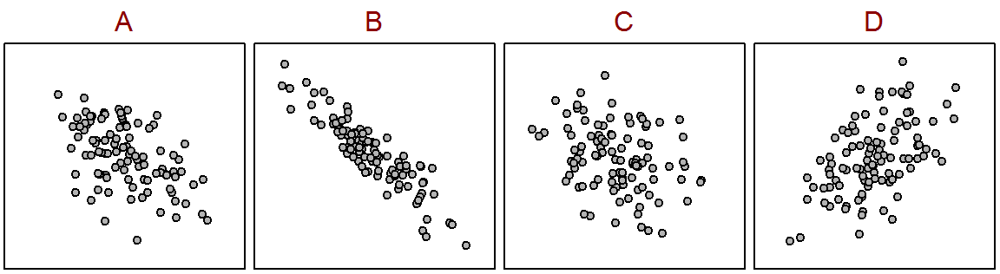

Order Scatterplots I
Order the following graphs from (a) lowest to highest value of r and (b) weakest to strongest.

You can click on each question to see an answer. Click on it again to close the answer.
Order the following graphs from (a) lowest to highest value of r and (b) weakest to strongest.
Order the following graphs from (a) lowest to highest value of r and (b) weakest to strongest.

Five of the scatterplots below correspond to the following correlation coefficients — 0.9, -0.5, -0.9, 0.6, 0.00. Identify the scatterplot that each correlation corresponds to. Some scatterplots will not be used.


Researchers in Northern Wisconsin wanted to explain the role of Whitetail Deer (Odocoileus virginianus) as a keystone herbivore (Waller and Alverson 1997). As a part of their analysis, they examined the relationship between the mean number of Eastern Hemlock (Tsuga canadensis) saplings on 14 x 21 m sections of a woodlot and a browsing index (a complicated measurement that gives the amount of food a deer has eaten in a given area). Use the data in the table below to answer the folowing questions.
mean no. hemlock saplings 0.95 2.89 2.97 3.94 4.74 5.10 6.64 7.13
browse index 0.31 0.35 0.49 0.50 0.61 0.63 0.86 0.90